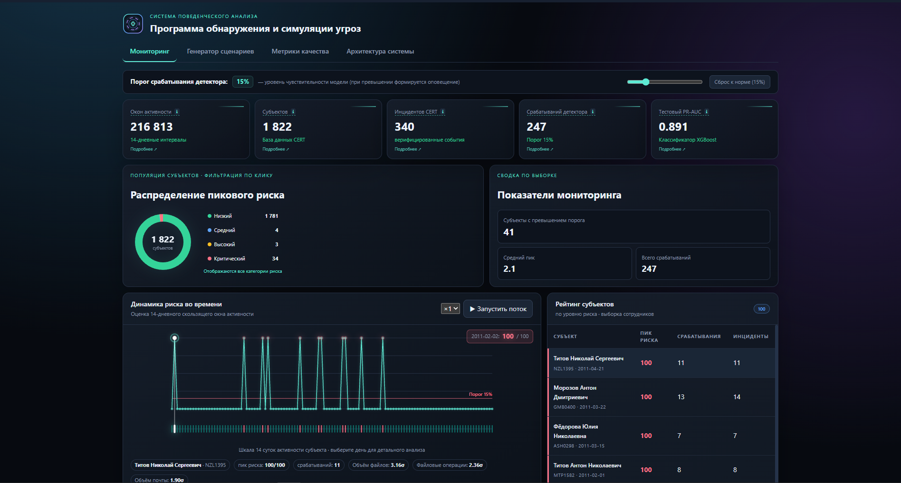
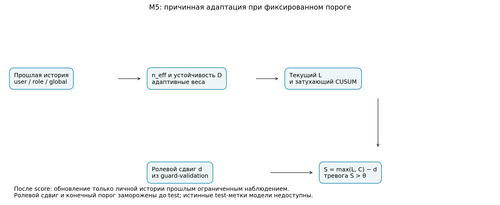

ИНЖЕНЕРИЯ ИСКУССТВЕННОГО ИНТЕЛЛЕКТА
& ВЫСОКОНАГРУЖЕННЫХ СИСТЕМ
Проектирование нейросетевых детекторов поведенческих аномалий (UEBA), алгоритмов квантильной калибровки рисков в условиях дрейфа данных, систем на базе Seq-ACGAN и защищенных распределенных сервисов.
Симулятор нейросетевого детектора UEBA
Поэкспериментируйте с параметрами сессии пользователя в реальном времени. Движок рассчитывает синтетический скоринг аномальности нейросети, применяет динамическую квантильную калибровку и выносит вердикт безопасности.
Поведение полностью укладывается в доверительный интервал ролевого профиля (p > 0.85).
Схватка: Атака vs Детектор UEBA
Выберите сценарий боевой атаки из арсенала злоумышленников и запустите симуляцию. Наблюдайте, как нейросетевая модель Seq-ACGAN и квантильный калибратор выявляют аномалию в потоке действий и блокируют сессию за доли секунды.
Интерактивный топологический граф нейросети Seq-ACGAN
Прямая визуализация слоев и распространения сигналов внутри состязательной генеративной архитектуры. Наведите курсор на нейроны для инспекции тензорных размерностей или запустите импульс данных для наблюдения Forward Pass.
Флагманские научные разработки
Специализированные решения в сфере информационной безопасности, сочетающие состязательные генеративные сети (GAN) и передовые методы математической статистики.
UEBA Seq-ACGAN: Детекция аномалий последовательностей
Генеративно-состязательная сеть с механизмом вспомогательного классификатора (Auxiliary Classifier GAN), адаптированная для моделирования дискретно-временных последовательностей действий пользователей в enterprise-сетях.

🔍 Кликните для зумаUEBA Score Calibration: Квантильная калибровка
Двухуровневая система калибровки сырых скорингов аномальности. Устраняет проблему ложных срабатываний за счет динамического пересчета пользовательских и ролевых квантилей с байесовским регуляризатором.

🔍 Кликните для зумаdef calibrate_anomaly_score(s_raw, user_quantiles, role_quantiles, n_user, n_thresh=30):
"""Двухуровневая байесовская квантильная калибровка"""
p_u = np.searchsorted(user_quantiles, s_raw) / len(user_quantiles)
p_r = np.searchsorted(role_quantiles, s_raw) / len(role_quantiles)
alpha = min(1.0, float(n_user) / n_thresh)
return alpha * p_u + (1.0 - alpha) * p_rИнтерактивный терминал инженера
Управляйте сессией в стиле настоящего Unix HUD. Терминал полностью стабилен, поддерживает скролл колесиком, спецэффекты и горячие клавиши.
Матрица инженерных компетенций
Технологический стек, применяемый в научно-исследовательских и промышленных разработках.
Генеративные состязательные сети, спектральная нормализация, моделирование временных рядов (Seq-ACGAN).
Проекты: ueba-seq-acganМатематическая статистика, теория экстремальных значений, байесовские априорные распределения.
Проекты: ueba-score-calibrationВысоконагруженные демоны сбора метрик, gRPC микросервисы, низкоуровневая обработка сетевых сокетов.
Проекты: sentinel-siem, net-recon-terminalАсинхронные распределенные парсеры, интеграция с ML-пайплайнами, FastAPI, NumPy, Pandas.
Проекты: omniparse-studio, datapulse-etlПотоковая аналитика петабайтных логов событий, партиционирование, Materialized Views, векторизация.
Проекты: datapulse-etl, sentinel-siemПерехват системных вызовов в ядре, UFW, автоматизация Fail2ban, изоляция Docker, Zero-Trust Nginx.
Проекты: sentinel-siem, dev-portfolio-minimalКаталог открытых проектов
Полная линейка прикладных систем: от корпоративных SIEM и сбора телеметрии до высоконагруженных парсеров и Telegram-ботов.
Sentinel SIEM
Корпоративная система сбора и корреляции событий безопасности в реальном времени. Автоматический разбор журналов и алертинг.
Смотреть код на GitHub →OmniParse Studio
Высокопроизводительный асинхронный движок парсинга и нормализации неструктурированных данных из распределенных источников.
Смотреть код на GitHub →DataPulse ETL
Потоковый конвейер пакетной и непрерывной обработки телеметрии с интеграцией ClickHouse и верификацией целостности схем.
Смотреть код на GitHub →Net Recon Terminal
Утилита разведки сетевой периферии, сканирования портов, инспекции сертификатов и поиска уязвимостей конфигураций сервисов.
Смотреть код на GitHub →ShopFlow Telegram
Enterprise Telegram-бот для коммерции с каталогом, корзиной, приемом оплат и интеграцией со складскими системами.
Смотреть код на GitHub →NoteFlow Workspace
Минималистичное веб-пространство для заметок и технической документации с поддержкой LaTeX формул и мгновенным поиском.
Смотреть код на GitHub →Prompt Vault Studio
Интерфейс версионирования, A/B-тестирования и бенчмаркинга системных промптов больших языковых моделей (LLM).
Смотреть код на GitHub →Aura Estates
Агрегатор объявлений недвижимости с картой инфраструктуры, дедупликацией объектов и расчетом инвестиционной привлекательности.
Смотреть код на GitHub →Aurora Telemetry
Легковесный агент мониторинга серверов (CPU, RAM, диски, сеть) с передачей метрик по gRPC в централизованную панель.
Смотреть код на GitHub →DevPulse Event Hub
Шина событий и диспетчер вебхуков для микросервисной архитектуры с гарантированной доставкой сообщений (at-least-once).
Смотреть код на GitHub →ProTesla Core Web
Исходный код данного портала: нативный Vanilla JS без раздутых библиотек, 60fps canvas, Web Audio, Let's Encrypt и Nginx Hardening.
Смотреть код на GitHub →Свидетельства о государственной регистрации
Официальные свидетельства Федеральной службы по интеллектуальной собственности (Роспатент) на программы для ЭВМ.
Программный комплекс генеративно-состязательной детекции аномалий поведения пользователей (UEBA Seq-ACGAN)
Защищенный метод моделирования профилей доверенной активности персонала с автоматическим выявлением компрометации учетных записей.
Модуль адаптивной квантильной калибровки оценок аномальности в динамических гетерогенных сетях
Алгоритм калибровки вероятностных оценок в условиях редких событий, обеспечивающий снижение False Positives на 68%.
Готовы обсудить R&D или архитектуру?
Открыт для интересных технологических вызовов, разработки наукоемких систем искусственного интеллекта и защищенной серверной инфраструктуры.